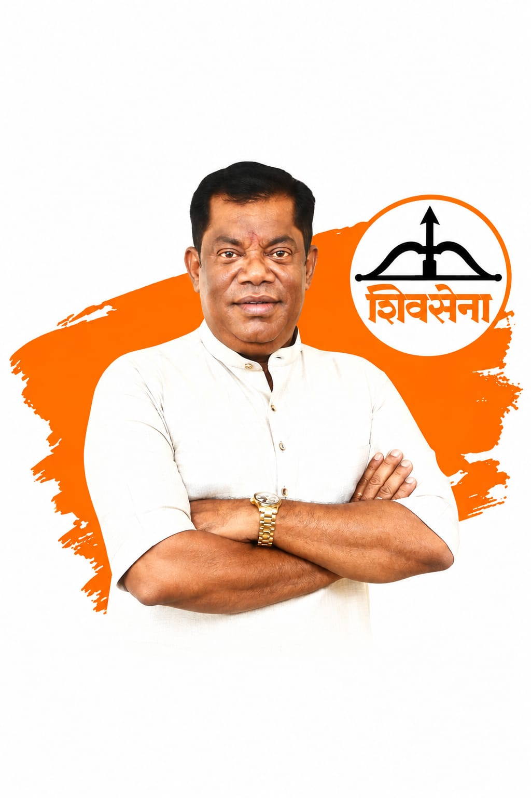
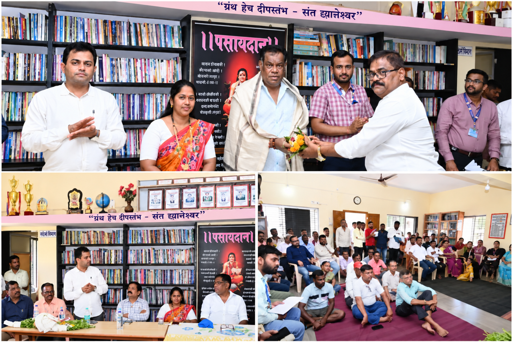
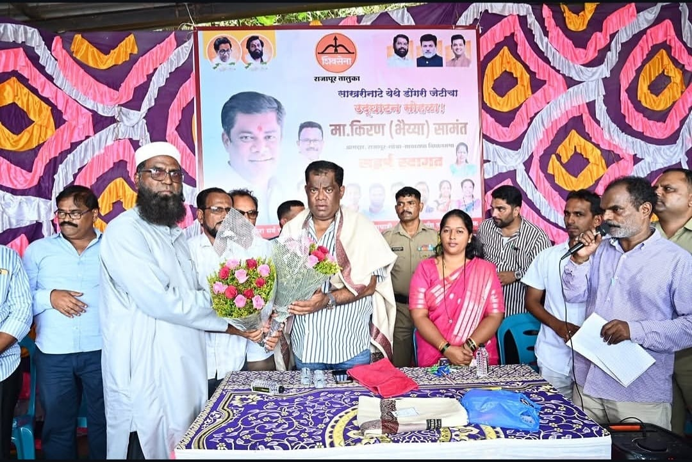
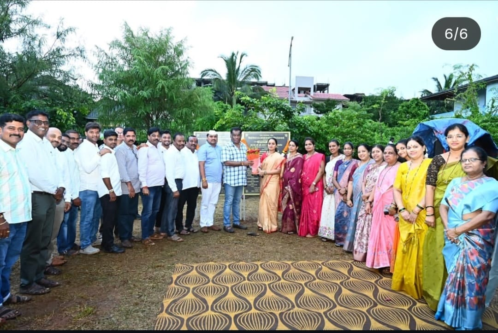
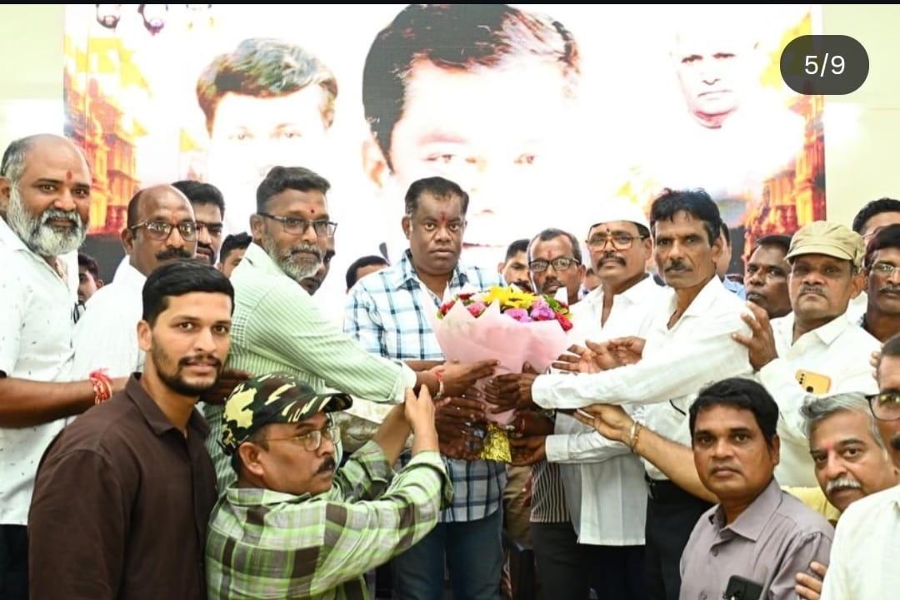
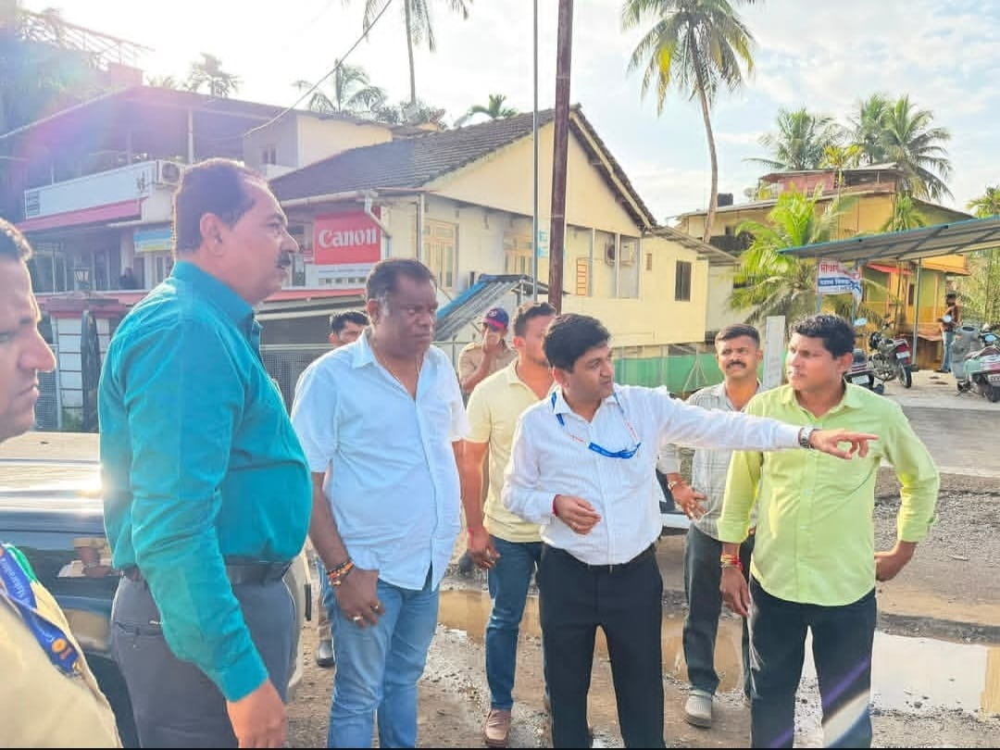

Rajapur and Lanja's development, without funds falling short.
A civil engineer and builder by profession, Kiran Bhaiyya Samant represents the Rajapur Assembly constituency in Ratnagiri district. Track development work, water and road projects, and raise a grievance directly with the constituency office.

KSWho is Kiran Bhaiyya Samant
Born in 1973 in Ratnagiri, he holds a diploma in civil engineering from the Board of Technical Examination, Bangalore (1992), and ran a construction business before entering electoral politics. He is the brother of Uday Samant, Maharashtra's Industries Minister and Guardian Minister of Ratnagiri district. He contested and won the Rajapur seat in the 2024 Maharashtra Assembly election on a Shiv Sena (Eknath Shinde-led faction) ticket.
"We will not let funds fall short for the development of Rajapur and Lanja."
- Resolving the taluka's long-pending water supply and road infrastructure issues
- Securing state funding for municipal council infrastructure in Ratnagiri and Rajapur
- Developing local tourism sites such as Gangatirth near Unhale
- Supporting healthcare, education, and farmer welfare across the constituency
- Continuing coordination with the Guardian Minister's office for district-level projects
Work done in the constituency
Direct initiatives, ground-level reviews, and inaugurated civic projects across Rajapur and Lanja.
Parallel Water Supply Pipeline Site Inspection
Conducted an on-site visit and community review to resolve bottlenecks and expedite the execution of the crucial parallel water pipeline scheme from the Sheel jackwell, safeguarding the long-term water needs of Rajapur city.
Municipal Council & Ward Development Review
Chaired high-level municipal council meetings with local representatives and officials to expedite civic works, fund allocations, and address regional administrative requirements without delay.
Inauguration of Dongar Jetty, Sakhari Nate
Inaugurated the vital Dongar Jetty at Sakhari Nate in Rajapur taluka, facilitating safe berthing, secure navigation, and improved occupational infrastructure for local fishing communities.
Bhoomi Pujan of Namo Udyan, Lanja
Laid the foundation stone for the ₹1 crore 'Namo Udyan' in Lanja city, featuring dedicated walking circuits, green landscaped open spaces, and modern recreational zones for children and senior citizens.
Multi-Purpose Hall & Nagarpanchayat Office at Kuve
Inaugurated the multipurpose community hall and officially inaugurated the Kuve Nagarpanchayat office, decentralizing administrative access and bringing roads, water, sanitation, and street lighting governance closer to locals.
Mumbai–Goa Highway Bridge Inspection at Chiplun
Conducted an on-site technical inspection of ongoing bridge works on the Mumbai–Goa Highway in Chiplun ahead of Ganeshotsav, reviewing traffic readiness and coordinating with engineers to ensure seamless transit for commuters.
Cashew Processing Shed Bhoomi Pujan
Performed the foundation stone ceremony for a modern cashew processing unit shed in Rajapur taluka, boosting self-reliance, direct market access, and value-added agro-income for local women farming collectives.
Photo gallery
Key civic visits, project launches, and ground reviews across the constituency.

Water Pipeline Scheme Site Visit
Inspection and review of the Sheel parallel water supply pipeline.

Municipal Council Review Meeting
Administrative coordination and civic planning meeting with officials.

Dongar Jetty Inauguration, Sakhari Nate
Dedicated the jetty for regional fishermen and maritime safety.

Namo Udyan Bhoomi Pujan, Lanja
Foundation ceremony for the ₹1 Cr public garden and walking park.

Kuve Nagarpanchayat & Hall Launch
Opening the multi-purpose community hall and civic office at Kuve.

Mumbai–Goa Highway Bridge Inspection
On-site review of Chiplun bridge works ahead of Ganeshotsav transit.
Skilling and opportunity in Rajapur-Lanja
- Supporting local youth and social organisations in the taluka
- Backing skill and employment initiatives tied to tourism and cashew processing
- Encouraging youth participation in civic and cultural programmes
- Coordinating with state schemes for rural employment and self-help groups
Strengthening local healthcare access
- Raising healthcare infrastructure gaps flagged by taluka residents in the Assembly
- Coordinating with the district administration on rural health facility upgrades
- Supporting improved municipal civic services in Ratnagiri and Rajapur towns
- Following up on healthcare access as part of the broader Rajapur-Lanja development agenda
Committee memberships
Appointed by the Speaker of the Maharashtra Legislative Assembly during his first term.
Grievance portal and feedback
Choose a category, describe the issue, and our office will follow up within 7 working days.